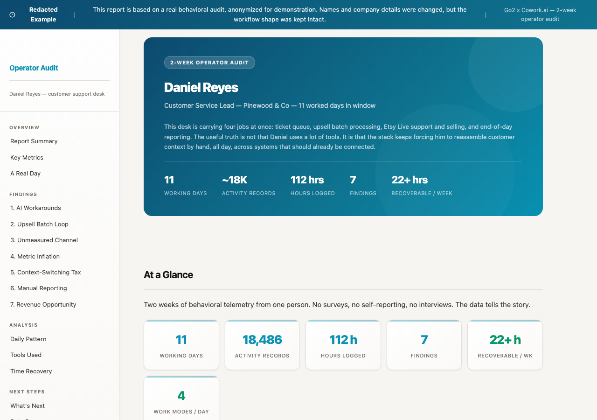
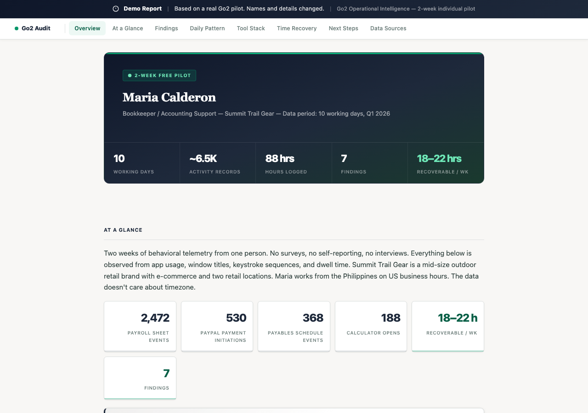
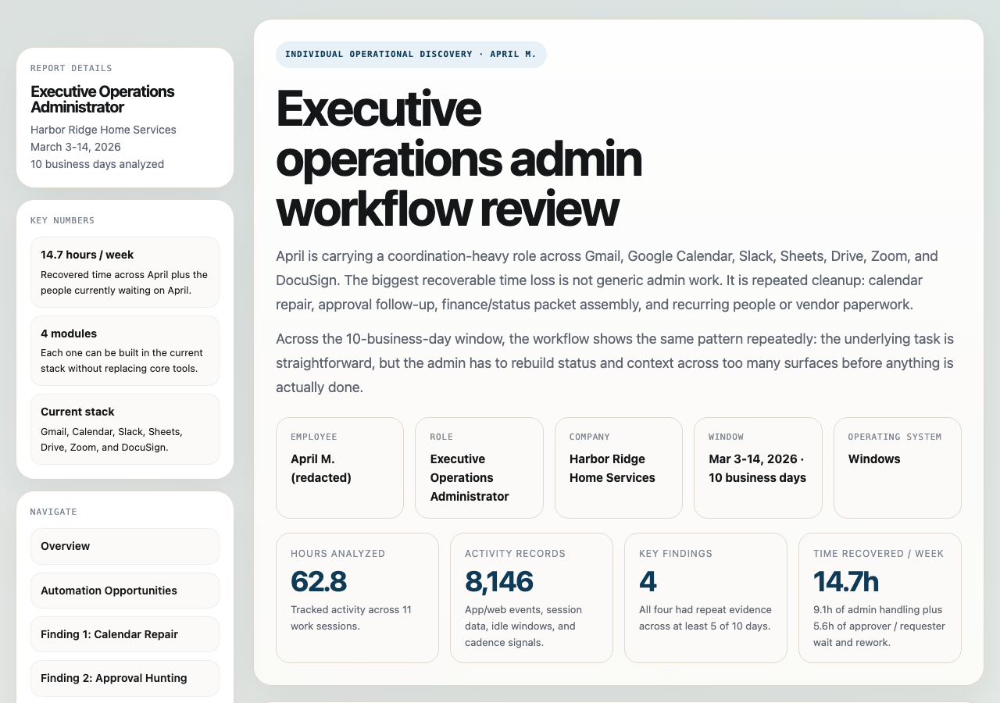
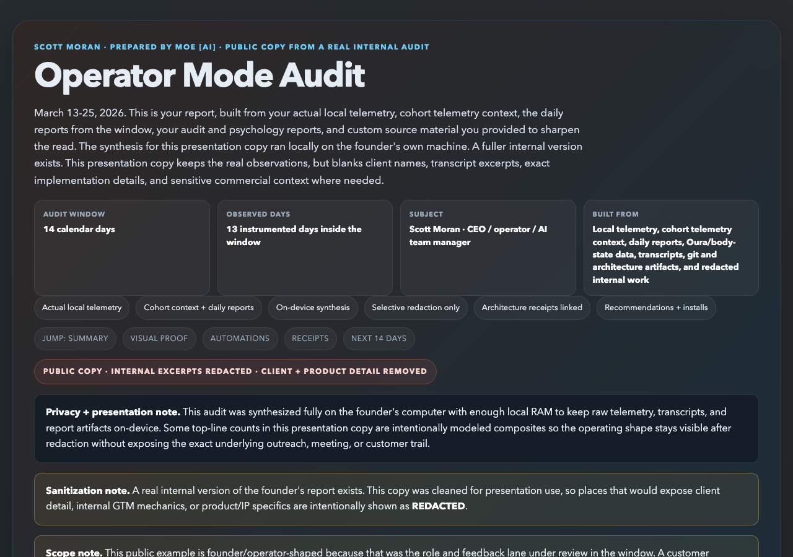
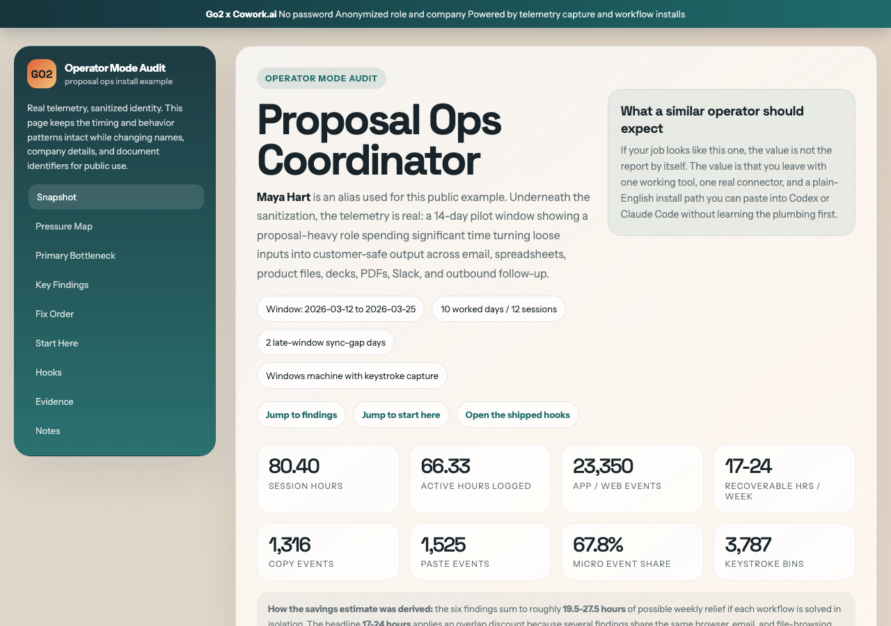
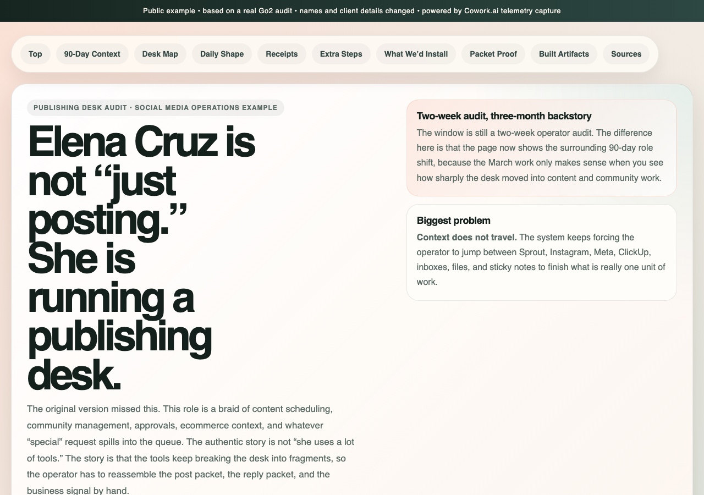

If we emailed you, it is because we think this could help.
Book a call, install Go2 on one worker machine for 1-2 weeks, and get back a Workflow + AI Opportunity Package while keeping your workers’ raw workflow data private and on their machine.
Go2 captures workflow telemetry locally, turns it into useful findings, and shows what should be fixed or automated next. Processing is handled with ZDRZero Data RetentionProcessed primarily through Google Vertex, with other ZDR-compatible provider paths available when needed. Prompts and responses are not retained for training, and we do not retain your raw workflow data either.. If you want help implementing the changes after that, we can do that too.
No rollout. No workflow change. This can take less than an hour of your team’s time and surface changes that could save hundreds of hours a month across the team, often with very little time or money required to implement.
We talk about your team, your goals, the workflow you want to improve, and the questions you want the package to answer.
We install the Go2 desktop agent on any worker machine you choose. It runs for 1-2 weeks and captures the workflow signal locally.
We send you a Workflow + AI Opportunity Package for that role and workflow: findings, confidence scores, automation opportunities, and the real tools, loops, and workarounds shaping the job.
What the pilot actually is: we instrument one real role, build a Workflow + AI Opportunity Package, show you what to fix or automate, and in some cases even write automations for you based on your existing tool stack. Then you can decide what you want to do from there.
Privacy and handling: raw workflow data stays private and on the worker’s machine. Processing is handled with ZDRZero Data RetentionProcessed primarily through Google Vertex, with other ZDR-compatible provider paths available when needed. Prompts and responses are not retained for training, and we do not retain your raw workflow data either., and if you need stricter handling or a customer-managed environment, we can talk through that on the call.
Based on real client outputs, with specific details altered to protect privacy.
Each package is structured off the call, so the format, emphasis, and tone shift based on the workflow and who will actually be using it.
Real role-based Workflow + AI Opportunity Package examples pulled from the current library. Names and identifying details are changed, but the work shape and findings are real.

Queue friction, AI workarounds, and hidden revenue leverage buried inside support work.

Ledger loops, reconciliation drag, and immediately installable finance automations.

Control-desk operations, approval routing, and back-office busywork that should not stay manual.

Leverage, context routing, install order, and where judgment should become reusable instead of staying trapped in one person.

Decks, proposal production, shipped hooks, and the response-pack builder sitting behind the report.

Editorial workflow, content batching, and campaign operations turned into an install-first audit.
If some of the terms in these packages feel unfamiliar, that’s normal. Our approach is built so non-technical teams can put useful closed-loop automations in place without needing to become engineers.
How to Build Useful Closed-Loop AI Automations for an SMB · AI workflow building blocks by platform
If you already booked the Workflow + AI Readiness Call, fill this out before we talk if you can.
Not booked yet? Schedule here.
Prefer to text? (415) 489-0160
This first-party form feeds the same intake backend we were already using, but now we can track a real success action on the site. If anything feels off, text Scott at (415) 489-0160 or email s@go2.io.
Thanks. We’ve got your intake.
If you already booked the Workflow + AI Readiness Call, you’re set. If not, schedule it here.
We give you the findings and recommendations so your team can act on them directly.
If you want help getting the first changes in place, we can help you set things up.
If the first package is useful, we can expand this to more people and figure out the next step together.
Go2 looks at how work actually happens instead of relying on docs, SOPs, or memory. It turns workflow telemetry into useful findings first, then into better decisions about what should be fixed, standardized, or automated.
The raw workflow data stays private and on the worker’s machine. Processing is handled with ZDRZero Data RetentionProcessed primarily through Google Vertex, with other ZDR-compatible provider paths available when needed. Prompts and responses are not retained for training, and we do not retain your raw workflow data either., and if you need tighter controls or a customer-managed environment, we can structure around that.
You get back a Workflow + AI Opportunity Package: findings, confidence scores, automation opportunities, and a better read on the tools, workarounds, and loops actually shaping the job.
Most AI tools start with docs, prompts, or a cleaned-up version of the process. Go2 starts with the work as it actually happens, which gives you a much better shot at creating measurable ROI instead of just adding another layer of software.
If the package is useful, you can implement the changes yourself, have us help with light implementation, or expand it into a broader team discovery and implementation path.